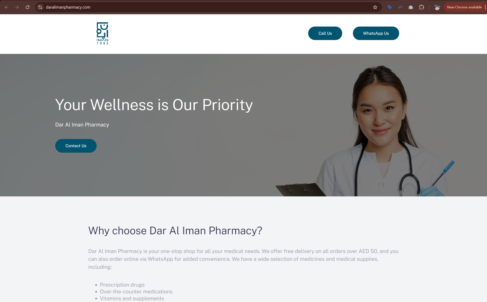

Dar Al Iman Pharmacy
Local business visibility through a focused website and Google Search Ads.
Dar Al Iman Pharmacy is a local pharmacy in Muweilah, Sharjah. I worked on the project as a freelance digital marketing specialist, helping the business strengthen its local visibility through a single-page website and Google Search Ads. The focus was practical and commercial: make the pharmacy easier to find online, increase calls, and drive more walk-ins and footfall.

Local pharmacy
Worked on a local healthcare retail business where visibility and trust directly affect footfall.
Muweilah, Sharjah
The business operated in a competitive local area with multiple nearby pharmacies.
Website plus Google Search Ads
The strategy focused on local discoverability through a focused web presence and targeted search visibility.
More calls, walk-ins, and footfall
The work was built around practical local-business outcomes rather than broad brand awareness.
A local pharmacy needed to stand out in a crowded area
Dar Al Iman Pharmacy was located in an area surrounded by competing pharmacies. The challenge was not just to exist online, but to become more visible to people already searching nearby and deciding where to go.
The challenge
The pharmacy needed a clearer online presence that would make it easier for potential customers to discover the business and take action. The work had to support real-world outcomes, especially calls, walk-ins, and local footfall.
What the work needed to do
- Create a clean and trustworthy digital presence
- Make the business easier to discover through Google
- Support local search visibility and map-related discovery
- Give customers a simple place to learn and take action
- Drive more footfall, calls, and walk-in traffic
Website creation and local search visibility support
My role focused on two core pieces of work: creating a clean single-page website for the pharmacy and running Google Search Ads to improve visibility on Maps and search results.
Website work
- Created a single-page website for the pharmacy
- Presented the business in a more trustworthy and professional way
- Built a clean online touchpoint for local customers
- Focused on clarity, credibility, and action
Search visibility work
- Ran Google Search Ads for local visibility
- Improved visibility on search and Google Maps-related discovery
- Focused on attracting nearby intent-driven customers
- Worked toward calls, walk-ins, and footfall
A simple local-business marketing setup built around action
The work was intentionally focused. Instead of building something large or complex, the priority was to create the right kind of visibility and the right kind of landing experience for a local pharmacy.
Single-page website design
Created a focused website that gave the pharmacy a more professional and accessible online presence.
- Built a clean one-page structure
- Made the business easier to understand online
- Created a stronger first impression
- Supported local business credibility
Google Search Ads
Used Google Search Ads to improve the pharmacy’s discoverability for nearby customers actively searching for relevant services.
- Focused on local search behaviour
- Improved visibility in Google search
- Supported local Maps-related discovery
- Worked toward direct commercial intent
Location-based visibility
Positioned the work around people already in the area who needed a nearby pharmacy and were ready to act.
- Targeted local intent rather than broad awareness
- Supported map and search relevance
- Improved the chance of discovery in a competitive location
- Used digital marketing to support physical-store footfall
Call and walk-in support
The website and ad activity were designed around simple, high-intent outcomes that matter for a local retail healthcare business.
- Supported more inbound calls
- Helped generate more walk-in visits
- Connected online discovery to offline action
- Focused on practical customer conversion
Trust and presentation
Created a more reliable digital impression for a healthcare business where trust matters from the first interaction.
- Presented the pharmacy more professionally online
- Improved customer confidence through better visibility
- Strengthened digital credibility with a dedicated site
- Made the business feel more established and accessible
Local business marketing
This project shows how relatively simple digital tools can create real-world impact when aligned with location-based customer intent.
- Used focused execution instead of overcomplication
- Built a marketing setup around local business needs
- Connected website and search into one journey
- Kept everything tied to footfall and conversion
What this work changed
The work helped Dar Al Iman Pharmacy improve how it appeared online and how easily nearby customers could find and contact the business.
More footfall
The local visibility strategy helped support increased in-store visits from nearby customers.
More calls and walk-ins
Better online discoverability translated into more direct customer actions such as calls and store visits.
Stronger local presence
The pharmacy gained a stronger and more credible digital presence in a competitive local market.
Examples from the workstream
The project centered on a clean single-page website supported by local search visibility.

Single-page pharmacy website
Website designed to give the business a clearer, more trustworthy digital presence and support local customer action.
What this project says about how I work
- I can build focused local-business marketing setups that prioritize real customer action.
- I understand how to use websites and search visibility together rather than treating them as separate tasks.
- I know how to simplify digital strategy when the business needs practical outcomes, not complexity.
- I connect online presence directly to offline results like calls, walk-ins, and footfall.
Want to see another project?
Explore another case study covering hospitality, education, logistics, influencer content, healthcare consulting, or real estate performance marketing.